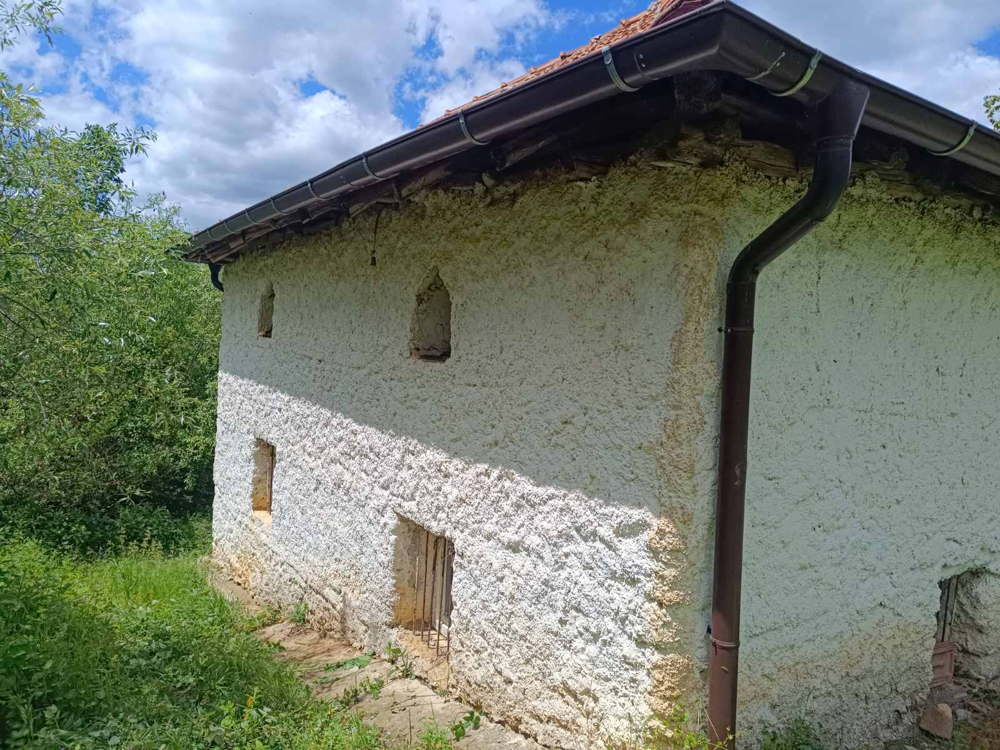
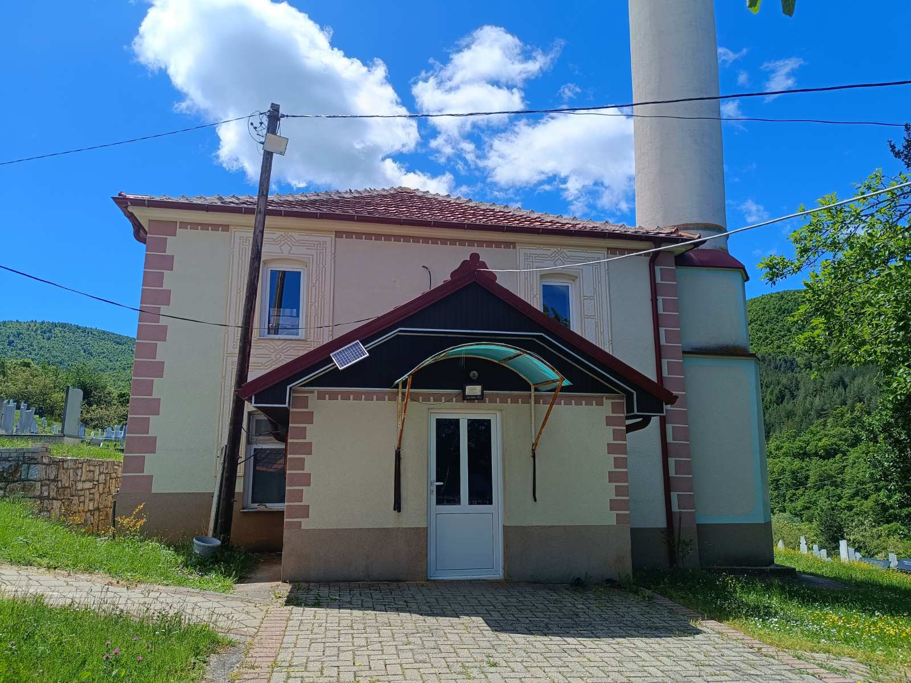
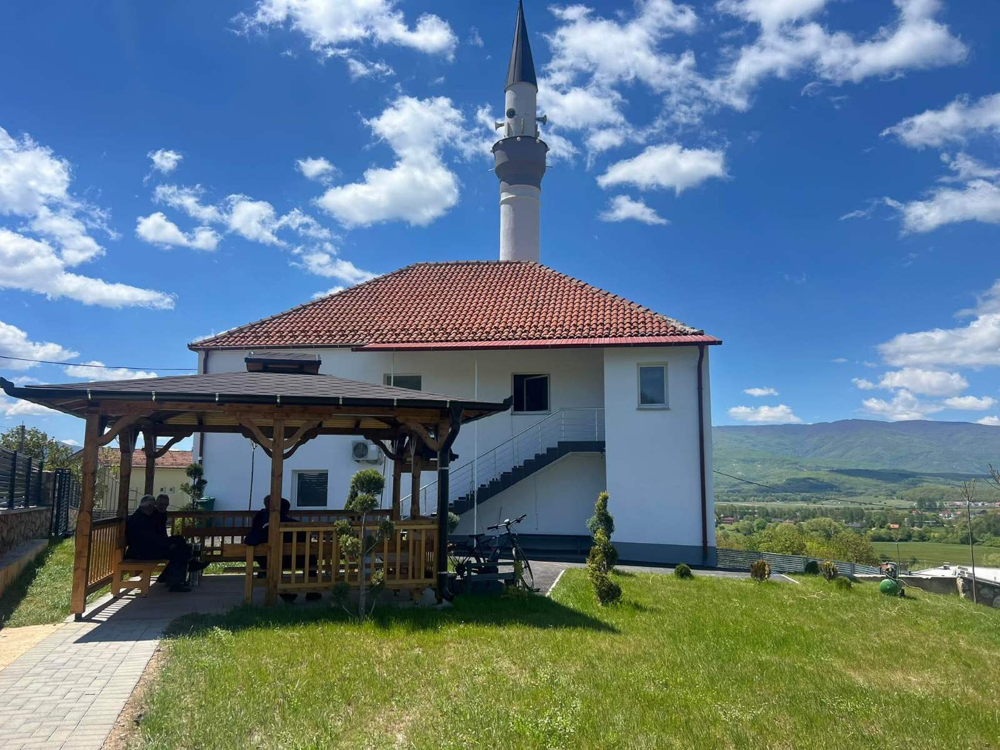

Xhamija e vjetër e Garanës është një ndër xhamijatë më të vjetra në Kërçovë me rrethinë dhe daton prej shekullit të XV. Është një dëshmi e gjallë që tregon se Feja Islame në këta troje është shumë herët, ne mund të kuptojmë se brezat para nesh gjegjësishtë baballarët tanë kanë qenë musliman që para 500 vjetëve. Kjo xhami gjendet në pjesën ku quhet Garana e Epërme për arsye se atje ka qenë fshati Garanë dhe sot e kësaj dite përreth xhamisë gjenden shtëpi të vjetra, disa prej tyre kanë fillu të rënohen por që janë tregues se në atë vend ka pasur fshat dhe kanë jetuar njerëz. Xhamija e vjetër e Garanës thuajse për pesë shekuj ka shërbyer për të kryer njerzitë obligimet fetare islame. Në këtë rast vlen të theksohet se në këtë xhami nuk janë falur vetëm banorët e fshatit Garanë por edhe banor të fshatrave që kanë qenë për rreth fshatit Garanë por në atë kohë të banuar me popullatë muslimane. Xhamija e vjetër e Garanës është rindërtuar disa herë por herën e fundit është rinovuar më 1994 me vetkontributin e popullatës. Këtë xhami së paku një herë në vit shkojmë e pastrojmë dhe në mënyrë të organizuar e falim namazin e xhumasë.

Vizito ▶ YouTubeGaranasit thonë se xhaminë e këtij fshati e ndërtoi familja "Sadiku". Çdo njeri e din dhe i thonë "Xhamia e Sadikallarëve". Për ndërtimin e kësaj xhamie të moshuarit e fshatit thonë se është ndërtuar rreth vitit 1870 pra para 156 vjet më parë. Kjo xhami legalizohet në vitin 1927, nëpërmjet qytetit të Manastirit me urdhër nga Turqia, shkruar në dokumentin e lëshuar për këtë objekt fetar të këtij fshati. Kjo xhami ka pranë varrezat dhe një objekt ku deri në vitin 1970 kanë mësuar nxënësit dhe ka pasur deri në katër klasë. Kjo xhami gjendet lartë, në afërsi të lagjes "Imeret e Epërme".

Kjo xhami njihet si xhamia më e re e ndërtuar në këtë fshat.
Pas këtyre dy xhamive vjen dhe xhamia e tretë e fshatit Garanë, e cila ndodhet në ledinën e quajtur ledina "Loshojca".
Ndertimi i sajë është bere rreth viteve 1900.
Pas ndëritimit të kesaj xhamie janë bërë dhe rinovime të xhamisë nga: brenda, jashta, poashtu rregullimi oborrit dhe dhoma të posaçme për të marrë abdes.
